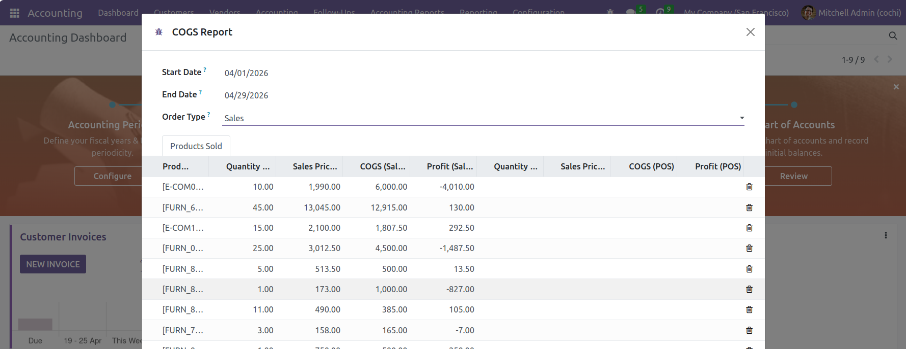
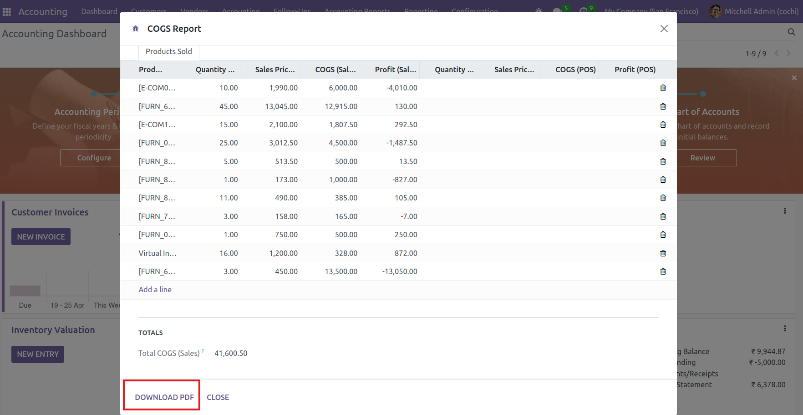

Module Screenshots




This module provides a powerful and intelligent Cost of Goods Sold (COGS) reporting system for Odoo 17 Community Edition. It enables businesses to accurately track product costs from both Sales Orders and Point of Sale (POS) transactions using flexible date-wise filtering. The module helps companies analyze profitability, monitor inventory cost impact, and generate professional PDF reports with a clean and user-friendly interface.
The module calculates the Cost of Goods Sold using the product cost price configured in Odoo. It automatically aggregates transactional data from Sales Orders and POS Orders within the selected date range. The generated report displays product-wise quantity sold, sales value, COGS amount, and profitability analysis in an organized and easy-to-read format.


Delivering Smart ERP Solutions with Odoo